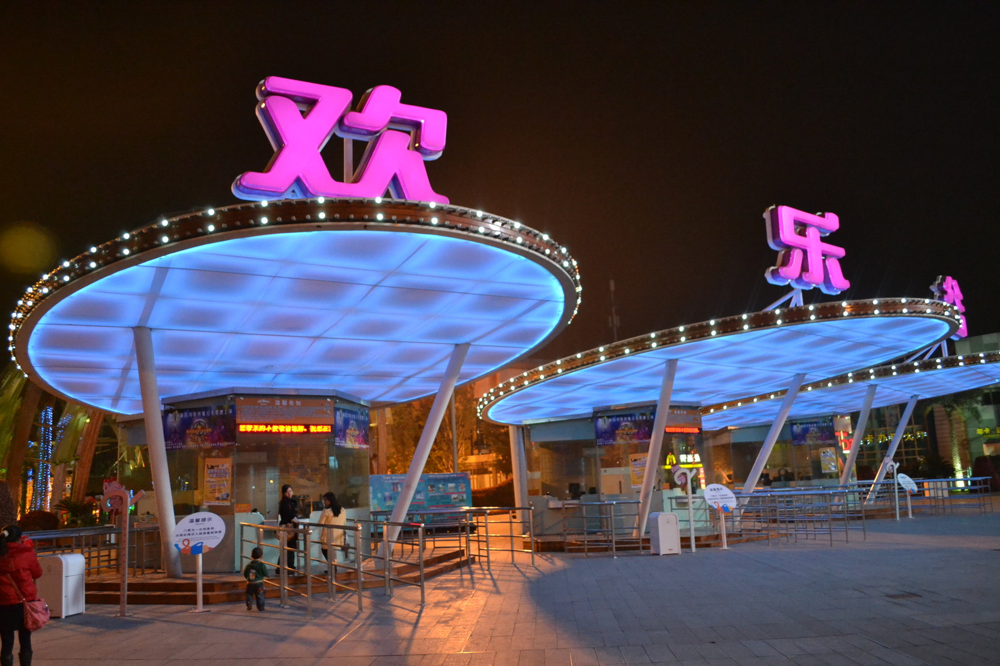

成都欢乐谷是成都市文化产业重点项目和旅游产业重点项目，位于成都市金牛区西华大道16号，距天府广场6.6公里，至成都各个主要人流区只需10～20分钟。成都欢乐谷是继深圳欢乐谷、北京欢乐谷之后，欢乐谷连锁品牌走向全国的第三站。 [1]
2011年成都欢乐谷成功跻身亚太地区主题公园前20强。
成都欢乐谷占地51万平方米，由阳光港、欢乐时光、加勒比旋风、巴蜀迷情、飞行岛、魔幻城堡、飞跃地中海、欢乐光年及丝路传奇9大主题区域组成，拥有百余项景点。其中设置了159项体验观赏项目，包括超过54项娱乐设备设施、58处人文生态景观、27项艺术表演、20项主题游戏和商业辅助性项目。
欢乐谷连锁品牌，创立于1998年10月1日，是国家首批5A级旅游景区——华侨城旅游的核心产品之一，中国主题公园第一品牌。成都欢乐谷2009年1月18日正式开园营业，品牌理念是“创造欢乐、传递欢乐、分享欢乐”，“动感、视尚、激情”则是它的品牌个性。 [2]
2017年8月8日，成都欢乐谷再次创新升级，以“一带一路”理念为指导，斥资6亿人民币，占地面积2.5万平方米，历经5年打造的全新三期“丝路传奇”正式开园，“丝路传奇”主题区域内以西域风情的建筑和主题景观为主要特色。